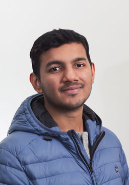

<!DOCTYPE html>
<html lang="en">
  <head>
    <!-- Required meta tags -->
    <meta charset="utf-8" />
    <meta
      name="viewport"
      content="width=device-width, initial-scale=1, shrink-to-fit=no"
    />

    <!-- Bootstrap CSS -->
    <link
      href="https://fonts.googleapis.com/css?family=Bree+Serif&display=swap"
      rel="stylesheet"
    />
    <link
      rel="stylesheet"
      href="https://stackpath.bootstrapcdn.com/bootstrap/4.3.1/css/bootstrap.min.css"
      integrity="sha384-ggOyR0iXCbMQv3Xipma34MD+dH/1fQ784/j6cY/iJTQUOhcWr7x9JvoRxT2MZw1T"
      crossorigin="anonymous"
    />
    <link
      rel="stylesheet"
      href="https://cdnjs.cloudflare.com/ajax/libs/font-awesome/5.12.1/css/all.min.css"
      integrity="sha512-9BwLAVqqt6oFdXohPLuNHxhx36BVj5uGSGmizkmGkgl3uMSgNalKc/smum+GJU/TTP0jy0+ruwC3xNAk3F759A=="
      crossorigin="anonymous"
      referrerpolicy="no-referrer"
    />
    <link rel="stylesheet" href="/home/ttahmid/webhome/academicons-1.9.4/css/academicons.min.css"/>
    <link rel="stylesheet" href="https://cdn.jsdelivr.net/gh/jpswalsh/academicons@1/css/academicons.min.css">
    <link rel="stylesheet" href="./style.css" />
    <title>Tokey's Website</title>
    <!--script src="https://kit.fontawesome.com/ee3ead5316.js"></script-->
  </head>

  <body data-spy="scroll" data-target="#navbarResponsive">
    <div class="container-wrap">
      <!---Side Bar--->
      <aside
        id="tamim-aside"
        role="complementary"
        class="js-fullheight"
        style="height: 100%"
      >
        <div class="text-center">
          
          <a class="navbar-brand" href="./index.html">
            <h3 style="font-size: 1.5vw">Tokey Tahmid</h3>
          </a>
        </div>
        <ul class="navbar-nav text-center padding-topo">
          <li class="nav-item padding-bottom">
            <a
              class="side-tacts"
              href="https://github.com/tokey-tahmid"
              target="_blank"
            >
              <i class="fab fa-github-square fa-3x"></i
            ></a>
          </li>
          <li class="nav-item padding-bottom">
            <a
              class="side-tacts"
              href="https://www.linkedin.com/in/tokey-tahmid-173304225"
              target="_blank"
            >
              <i class="ai ai-inspire-square ai-3x"></i
            ></a>
          </li>
          <li class="nav-item padding-bottom">
            <a
              class="side-tacts"
              href="https://www.researchgate.net/profile/Tokey-Tahmid"
              target="_blank"
            >
              <i class="ai ai-researchgate-square ai-3x"></i
            ></a>
          </li>
          <li class="nav-item">
            <a
              class="side-tacts"
              href="https://scholar.google.com/citations?hl=en&user=SEXOtTgAAAAJ"
              target="_blank"
            >
              <i class="ai ai-google-scholar-square ai-3x"></i
            ></a>
          </li>
        </ul>
        <footer class="tamim-footer">
          <div class="col-12">
            <hr class="new1" />
            <h6>&copy; Tokey &copy; 2019 |All rights reserved</h6>
          </div>
        </footer>
      </aside>
      <!---Main Body--->
      <aside
        id="tamim-main"
        role="complementary"
        class="js-fullheight"
        style="height: 100%"
      >
        <!--Code Section Here-->
        <div class="aboutContainer">
          <h1 class="display-3 padding-bottom padding-left padding-topo">
            Tokey Tahmid's Homepage
          </h1>
          <h1 class="display-4 heading padding-left">About Me</h1>
          <hr class="my-4" />
          <p class="lead padding-left">
            I am a passionate AI researcher specializing in <strong>Artificial General Intelligence (AGI)</strong>, currently pursuing a Master's degree in Computer Science at the University of Tennessee, Knoxville. With a strong academic background and extensive research experience in AI, machine learning, and neuromorphic computing, I am dedicated to advancing the field of AGI through innovative research and collaboration.
          </p>
          <p class="lead padding-left">
            My work focuses on developing scalable and energy-efficient AI systems, reinforcement learning algorithms, and large language models. I have contributed to multiple research projects resulting in publications at reputable conferences such as the <em>IEEE High Performance Extreme Computing Conference</em> and the <em>International Conference on Neuromorphic Systems</em>. My expertise includes high-performance computing, distributed systems, and deep learning frameworks like TensorFlow and PyTorch.
          </p>
          <p class="lead padding-left">
            I am seeking to apply my research skills and experience at a leading research facility or organization at the forefront of AGI advancement. I am eager to collaborate with multidisciplinary teams to solve complex problems and drive the future of artificial intelligence.
          </p>
          <p class="lead padding-left">
            <strong>Let's connect</strong> if you're interested in AI research, AGI, or potential collaboration opportunities.
          </p>
        
          <h3 class="lead padding-left">Skills and Expertise:</h3>
          <ul class="lead padding-left">
            <li class="lead padding-left">Artificial General Intelligence (AGI)</li>
            <li class="lead padding-left">Machine Learning &amp; Deep Learning</li>
            <li class="lead padding-left">Reinforcement Learning</li>
            <li class="lead padding-left">Neuromorphic Computing</li>
            <li class="lead padding-left">High-Performance Computing</li>
            <li class="lead padding-left">Distributed Systems</li>
            <li class="lead padding-left">Programming Languages: Python, C++, Java, Fortran</li>
            <li class="lead padding-left">Frameworks: TensorFlow, PyTorch, CUDA, MPI</li>
          </ul>
        
          <h3 class="lead padding-left">Publications:</h3>
          <ul class="lead padding-left">
            <li class="lead padding-left">
              "<em>Towards the FAIR Asset Tracking Across Models, Datasets, and Performance Evaluation Scenarios</em>" – IEEE HPEC Conference
            </li>
            <li class="lead padding-left">
              "<em>Towards Scalable and Efficient Spiking Reinforcement Learning for Continuous Control Tasks</em>" – ICONS Conference
            </li>
            <li class="lead padding-left">
              "<em>Character Animation Using Reinforcement Learning and Imitation Learning Algorithms</em>" – ICIEV and icIVPR Conference
            </li>
          </ul>
        
          <p class="lead padding-left">
            Feel free to reach out to discuss AI research, collaboration, or other professional opportunities.
          </p>
          <hr class="my-4" />
          <!-- <p class="lead padding-left">
            <a href="./index.html" target="_blank">My Homepage</a>
          </p> -->
          <p class="lead padding-left">
            <a href="./Resume_TokeyTahmid.pdf" target="_blank">My Resume</a>
          </p>
          <p class="lead padding-left">
            <a href="./CV_TokeyTahmid.pdf" target="_blank">My Curriculum Vitae</a>
          </p>
        </div>
        <!--Code Section End Here-->
      </aside>
    </div>
  </body>
</html>
